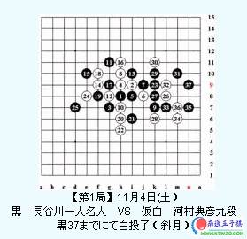
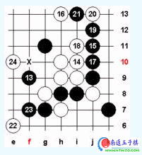
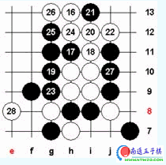
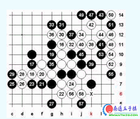
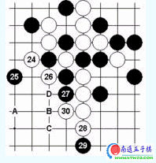
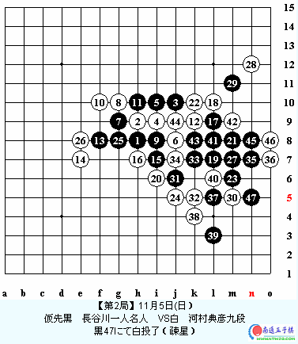
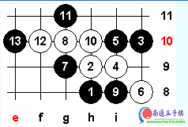
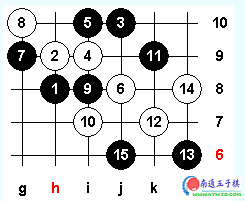

44期日本名人战对局点评
#1 44期日本名人战对局点评 作者：有志青年 发表时间：2007-3-14 17:23:56

第一盘，挑战者河村开斜月。 长谷川交换执黑，黑5避开9g， 避免俗套的大型定式。 虽然黑优势，但是有余大家都很熟悉，黑也难胜。这个5变数多， 日本老棋手的斜月都有很深的研究， 白8是近期流行的下法， 如8下7h也是一种选择， 但是那样黑棋容易控制外围，白棋很苦， 这个8有反击的意味， 11双方布局完成。 接下来的12是局面走向的焦点， 12的选择很多， 比如，12下9f、9g、10i、8g都行。 当然，有强有弱。
河村的12目前最强防之一， 河村的目的如下， 如进行至16白棋满意， 后面的变化略作介绍， 17初看不错， 我和ando也下过这个变化，当时他就下了这个17， 怎奈18绝妙，白必胜了， 21最强抵抗， 24后黑棋禁手难逃。

这是黑棋正确防守的一个变例， 黑稍有利。 28也可，黑白各有顾忌。

基于前面的定式，黑棋求变， 13也是我在面对这个12时候经常采用的策略。 白棋虽然有先手，但是如果处理不好，后面还是黑棋好下， 双方实战到16基本必然， 黑17大致有两个选择， 9e和9g ， 这个17比较诱人。 但是，我的研究却是必败的一步，见下图：

21局部唯一最强防！22必胜的关键， 其他的下法白棋逸机，局面白不利， 23也最强抵抗， 24初看白棋丧失先手？！ 但是正是这步棋让黑棋难以防守， 最强的27！黑棋拼命！ 白32、38、46妙手连发， 58后黑棋禁手难逃。
所以，实战长谷川避开了这个17，也许他也有研究认为黑必败？ 17黑棋正确的防守， 18河村的最善防（18先13h再7f也是一种有力的下法）。 22可以说是胜负手， 如果22选择其他稳妥的防，局面将会慢慢导入黑棋的步调。 这里我想很多人都会选择黑棋5g吧， 黑棋不坏。不过，长谷川也在这里犯下致命的错误， 23也是胜负手， 也许双方对第一盘需要的是胜利而不是和棋。 实战24正确， 25也唯一。 接下来的26？ 这样只能说明河村没有发现白胜， 也就是说对22的下法只是一种临场的姿态， 因为，如果下22 必然要考虑到黑棋会下23的局部强手， 如果黑棋23的局部强手，白棋拿不出好的对策，那么22就有问题了， 这里，也说明长谷川没有看到白棋的妙胜。 否则，也不会下这个过分的23， 两大高手都误算了。白棋正确的下法是这样的， 30后，大家看看白棋是否有先手？（有A~D的vcf）

可惜，白棋功亏一篑， 实战26的防必败了。长谷川后面的胜法非常精确， 体现了名人的风采。37后双杀， 虽然没几步棋，但是计算量是很大的。 总的来说，这盘棋双方都有一次致命的失误， 可惜都错过了。 不过，即便如此，这盘棋我们还是可以学习很多的技战术和对局思路。
#2 44期日本名人战对局点评 作者：有志青年 发表时间：2007-3-14 17:26:09

我们来看第二盘，长谷川执黑，河村执白。这个5长谷川常用的选点，实战的结果不是很理想，胜率不高。但是从这个5的选择来看，黑棋想稳守。因为，日本的名人战是五局三胜，卫冕名人只要累计2.5分就可以卫冕成功。胜一局得1分，和棋0.5分，目前， 长谷川领先1分，后面只要不输棋就可以卫冕了。
河村的6，并没有选择现在常见的10k，这个6老棋手都比较熟悉，黑9，黑棋的意图很明显。 如果白棋采取稳守的策略，黑棋很难有所作为。

目前看白棋的选择，白棋如果这样，13后，白棋暂时有先手优势，将来在右边展开攻势。但是黑棋防守正确白无胜，如白棋控制的好，中后盘白棋较有利。

如白棋采用这个定式，目前的研究认为黑有利，容易控制局面。
但是，实战白棋避开这两大定式分支。这个10，多年前在中村的实战中看到，对于和中村渊源很深的河村对这个10或许有更深的研究，11应该说目前的最善选择，12措手难，似乎选点很多，实战的12有诱使黑棋进攻的想法，如果对中村对棋比较熟悉的话，这也是中村经常采用的策略，在防守中寻找机会。
13、15的处理我在观战时候也想到黑大致会这样下，目前来看黑棋有利，16强防！局面的焦点转移到右边，17好点！18的选点观战的如山口，就认为防10k好，我也同意山口的观点。
实战的18不好，虽然还不是败因。黑6i不好，20要点防后黑无趣。如 L7好不？这样的话，18就变成好棋了，实战正是这样下的 ，接下来20的防守难以理解，第一感防6j不好吗？这个20看似白棋有反击的意图但如果白棋这样，黑棋占21对黑来说没什么好处。20应该说河村误算，黑棋在右边无胜。所以20意图将来对反击有利。8k太谨慎 ，实在没办法的情况下才缩到里面防，6j比8k好。实战被黑21一击，白危险。这时，我们是不是发现如果18在10k就好多了？ 23长谷川实力的体现，黑必胜！
这两盘棋长谷川攻击力还是发挥的非常好，一剣封喉，实战到30后，河村自己认输了 ，这盘棋可以说白棋过于急躁 ，导致白20过早求胜，被长谷川抓住机会 ，第三盘只要长谷川守和即可卫冕，应该说难度不大。 不出意外河村今年的挑战多数失败 ，今天两盘棋就讲到这里。
#3 Re:44期日本名人战对局点评 作者：堇色 发表时间：2007-3-31 12:28:36
问个问题：第一个对局中图3示例的变化：17，18后，黑19跳I12，然后白棋G10反活三，黑F10挡2后大优接近必胜？